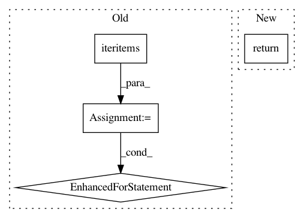

e403821323d529980407c05da77409c7e1c5c2a0,debug_toolbar/panels/headers.py,HeaderDebugPanel,content,#HeaderDebugPanel#,38
Before Change
</dl>
""")
headers = []
for k, v in self.request.META.iteritems():
if k in self.header_filter:
headers.append({"key": k, "value": v})
c = Context({"headers": headers})
return t.render(c)
After Change
context = {
"headers": dict([(k, self.request.META[k]) for k in self.header_filter if k in self.request.META]),
}
return render_to_string("debug_toolbar/panels/headers.html", context)
In pattern: SUPERPATTERN
Frequency: 3
Non-data size: 4
Instances
Project Name: jazzband/django-debug-toolbar
Commit Name: e403821323d529980407c05da77409c7e1c5c2a0
Time: 2008-09-08
Author: rob@cogit8.org
File Name: debug_toolbar/panels/headers.py
Class Name: HeaderDebugPanel
Method Name: content
Project Name: UFAL-DSG/tgen
Commit Name: e4eac21828a6b9037d314266908f4ba083b1940e
Time: 2015-12-15
Author: odusek@ufal.mff.cuni.cz
File Name: tgen/parallel_percrank_train.py
Class Name:
Method Name: dump_ranker
Project Name: jazzband/django-debug-toolbar
Commit Name: 12fdf7ea605d3716d6c9127e22a63bcc345d55be
Time: 2012-04-06
Author: jannis@leidel.info
File Name: debug_toolbar/panels/cache.py
Class Name: CacheStatTracker
Method Name: get_many